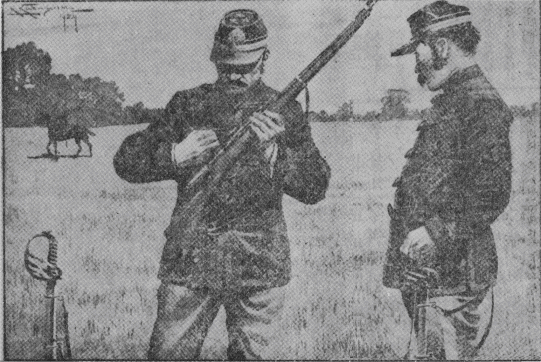

| 国際射的大競技 | |
| 小酒井 不木 | |
| 青空文庫 (2017) | |
国際射的大競技
小酒井不木
昨年オランダに開かれたオリンピック大会で、わが日本選手が三段
とびの第一等に入選したとき、私
たち内地の日本人がどんなに喜んだかは、おそらくまだ皆
さんの記憶
にあらたなるところであると思います。あの新聞記事を読んだせつな、思わずも私の目には熱い涙
がたまりました。すべての競技がそうでありますけれど、なかんずく国際競技ほど人の血をわかし肉をおどらすものはありません。
今からおよそ五十余年の昔
、普仏戦争
の起こるすこし前、フランス陸軍省の主催
でパリーの郊外
に射的大会が開催
されました。当時フランスには世界各国から軍事研究者が留学にきていて、わが日本からも十人余りの士官が派遣
され、それらの人々が射的大会に招待
されたのでありますから、いわば国際射的大会となったわけです。
当時日本人は、欧州人
から見れば、まったく眼中
になかったのであります。日本という国さえも認
められてはいないくらいでした。そうして、日本人そのものはといえば、欧州人
よりも体格は劣
るし、有色ではあるし、言語も不自由であるから、自然軽蔑
されたのも無理はありません。
けれども日本人には、祖先伝来の日本精神があります。いかなる困難
とも戦って、あくまで目的に進むという尊
い精神があります。その精神がことごとにあらわれますから、当時の滞仏士官
も、さほどの屈辱
を受けずにすみました。その証拠
には、射的大会
へ招待
されたのでもわかります。
大会へ招待されたのは、当の仏国
のほかに、英
、独
、露
、伊
、西
、日
の六ヵ国でした。前日予選が行なわれましたが、仏
、英
各三人、独
、露
各二人
、伊
、西
、日
各一人
が選にはいっただけでありました。この予選にはいった十三人が、翌日
晴れの競技を行なうことになったのであります。日本人で入選したのはＭ
という陸軍工兵大尉
でありましたが、予選の点もはなはだふるわず、かろうじて入選したくらいでありました。
その日、同僚
の士官たちは、Ｍ大尉
をかこんで、
「おいＭ、明日
はしっかりやってくれ、日本人の名声をあげるには絶好
の機会だ、どうか祖国のために万丈
の気炎
をはいてくれ！」
と、口をそろえて激励
しました。
Ｍ
大尉は、歩兵銃
の研究にきていたのでして、いわば射撃
では専門家なのです。Ｍ大尉は静かに語りました。
「ありがとう。おおいに注意して見苦しい成績はあげぬつもりだ。今日
の不成績は、ひきょうないい方だが、銃
がよくなかったというよりも、ぼくの使った銃
の研究がたりなかった。明日
の競技につかう銃はここへ貰
ってきてあるから、これから諸君
とともに、この銃の研究にゆきたいと思う。いっしょにきてくれないか」
だれも異議
のあるはずがありません。一同は、射的場
近くの野へ出て、Ｍ大尉
の射撃演習
を手伝いました。ごしょうちのとおり、銃には一本一本違
った個性があります。同じ人間が作った銃でも、それぞれ、その弾道
だとか、着弾距離
だとかがちがいます。それゆえ、射撃を行なう前には、銃の個性を十分研究しなければならないのであります。
Ｍ大尉
はおよそ二時間あまり熱心に研究しました。的を射
ては、弾丸
のあたった場所をしらべて研究すること、数十回におよびました。
「よし！」
最後にＭ大尉はきっぱりといいました。
「明日
はだいじょうぶだ！ けっしてヒケをとらぬつもりだ！」
そう自信ありげな口調に、士官たちは歓声
をあげて引きあげました。
いよいよ大競技の当日がきました。四月の空はうるわしく晴れて、遠くに見ゆる伽藍
の塔
が絵のようにかすんで見えました。早くも観衆
は場外にあふれ、勇ましい軍楽隊の合奏
が天地に響
き渡
りました。
はるか二百メートルをへだてたかなたに十三個の的が土手
の前に並
び立っております。こちらから見ると、まるで一点にしか見えません。それほど当日の的は小さかったのであります。普通
は大きな的で、あたり場所によって点数がきまるのですが、この日は、あたれば十点、あたらねば零点
、しかもわずかに三発しか与えられていないのであります。
先
ず十三人の順序が抽せんによって定められました。すると、どうであろう、わがＭ大尉
は縁起
悪くも最後の十三番となりました。西洋では十三という数を忌
みきらいます。その忌まれている数を、日本人が引きあてたのです。わが応援
の士官たちも思わず顔を見合わせましたが、Ｍ大尉の顔はりんとして輝
いているだけでしたので、人々はまずあんどの胸
をなでおろしました。

いよいよ第一番のドイツ人が火ぶたを切りました。ドン！ と一発。
人々はかたずをのんで、的の下の壕
からの合い図を待ちました。赤い旗が出て上下に振
れば十点、黒い円形の弾痕指示器
が出て左右に振
れば零点
なのです。
ヒョイと出たのは黒い指示器。それが左右に振れました。ああ！
ついで第二番、第三番と進みましたが、いずれも零点
ばかり、最後にＭ大尉
の番になりました。ああ。見ていた日本士官たちの心はどんなだったでしょう。
やがてドンと一発！
おお！ 赤い旗が上下に！ 揺
れる揺れる。
わッ！ という歓声
は天地を轟
かしました。日本士官は思わずも抱
き合って踊
り上がりました。しばらくはすべての人の拍手
が鳴りやまなかったのであります。この光栄、この名誉
！
ついで第二回目になりました。第一番のドイツ人はみごとにあてました。それからあたらぬ人とあたった人が相伯仲
し、最後にＭ大尉の番になりました。人々はいっせいに注目しました。
ドン！
ああ、あわれ、黒い指示器が。
士官たちの歎
き！ けれども当のＭ
大尉はすこしも落胆
しないのみか、にっこりとしておりました。
ついで第三回。その結果二十点を取ったものはドイツ人とフランス人が一人
ずつで、スペイン人が零点
。あとは十点ずつでした。もしＭ大尉があてれば、三人の決選になります。
そのときの応援士官
の心持ちはどうでしたでしょう。日本の名誉はこの一発にかかっております。
ところがです。あわれにも第三回の発射
には黒い指示器が左右に振
られたのであります。
審判官
はまさに宣言をくだそうとしました。
そのときＭ大尉はつかつかと進みよって、りゅうちょうなフランス語で大声に申しました。
「審判官殿
。私
はたしかに三回とも的を射
あてました。けれども、それは壕
の中にいる人にわからなかったのであります。第二第三の弾丸
は第一の弾丸のつらぬいたあなを通ったはずです。どうか土手
を掘
って弾丸の位置をおしらべください」
このことばに人々はＭ大尉
が発狂
したのではないかと思いました。けれども自信ある態度
におかすべからざる威厳
がありましたから、審判官
は、大尉
のねがいをききました。
やがて土手
が掘
り返されました。
見よ、そこには三発の弾丸
がねずみのように重なっていたではありませんか。
この奇蹟
！ この妙技
！
再
び起こる喝采
の声！ かくてＭ大尉
は第一等の栄冠
を得
て、予定通りわが日本のために万丈
の気炎
をはきました。
（昭和四年四月号）
底本：「少年俱楽部名作選3
少年詩・童謡ほか」講談社
１９６６（昭和41
）年12
月17
日発行
底本の親本：「少年俱楽部」講談社
１９２９（昭和4
）年4
月号
初出：「少年俱楽部」講談社
１９２９（昭和4
）年4
月号
※表題は底本では、「国際射的大競技
」となっています。
※樺島勝一（１８８８（明治21
）年7
月21
日～１９６５（昭和40
）5
月31
日）の挿絵を同梱しました。
入力：sogo
校正：noriko saito
２０１７年3
月11
日作成
青空文庫作成ファイル：
このファイルは、インターネットの図書館、青空文庫（http://www.aozora.gr.jp/）で作られました。入力、校正、制作にあたったのは、ボランティアの皆さんです。